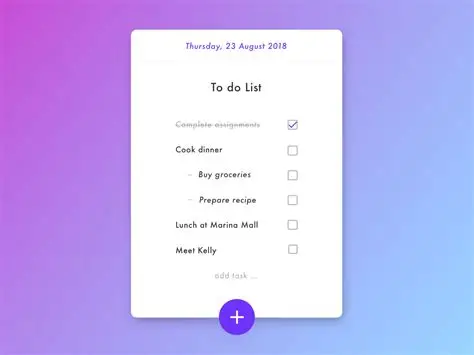

I am passionate and dedicated with strong foundations in software development and keen interest in computer science. With hands-on experience developing diverse projects, I create innovative solutions that demonstrate my technical
skills and creativity. Currently seeking opportunities to expand my expertise, I remain committed to continuous learning and delivering high-quality work in the technology industry.

MyEcommerce is a robust, real-life ecommerce application designed to handle a wide range of functionalities, making it a standout project in my portfolio. This platform supports user authentication and OAuth integration for secure
access, allowing seamless login and account management. It includes features like product listings, shopping cart management, order processing, and payment gateway integration. Built with a focus on scalability, it employs a modular
architecture to support future enhancements. This project showcases my ability to develop complex, user-friendly applications with real-world applicability.
UBS Banking is a comprehensive banking management system that clones functionalities from multiple banks, offering a unified platform for account management, transactions, and user authentication. Built with JavaFX for an intuitive
GUI, it simulates real banking operations including deposits, withdrawals, and account statements. The system integrates OTP generation for secure transactions and email notifications using JavaMail, highlighting advanced security
and communication features. This project showcases my skills in financial software development and system integration.
The Ukraine App is an application providing banking and financial information tailored for users. This project demonstrates my ability to create functional software with a focus on user engagement, featuring account management and
transaction navigation functionalities
The Banking ATM System is a real-life simulation built using JavaFX for a graphical user interface, showcasing my expertise in GUI development and Java programming. This project simulates ATM functionalities such as balance checking,
withdrawals, deposits, and PIN management, providing a practical application of banking software concepts.
The Calculator project is a straightforward application developed in Java, designed to perform basic arithmetic operations. It serves as a foundational project that demonstrates my understanding of logic and user interface design in
software development.
SecretApp is an innovative project that allows users to send encrypted secret messages, emphasizing security and privacy. This application showcases my skills in cryptography and secure communication protocols, making it a unique addition
to my portfolio.

The ToDo application is a task management tool designed to help users organize and track their daily tasks. This project reflects my ability to create productivity tools with a focus on user-friendly design and functionality.
The Job Listing project is a web-based application for posting and browsing job opportunities. It demonstrates my skills in web development and database management, providing a platform for job seekers and employers to connect.